C exercises C语言的练习
Table of Contents
1 摘录於《C语言程序设计——现代方法》
1.1 C语言基本概念
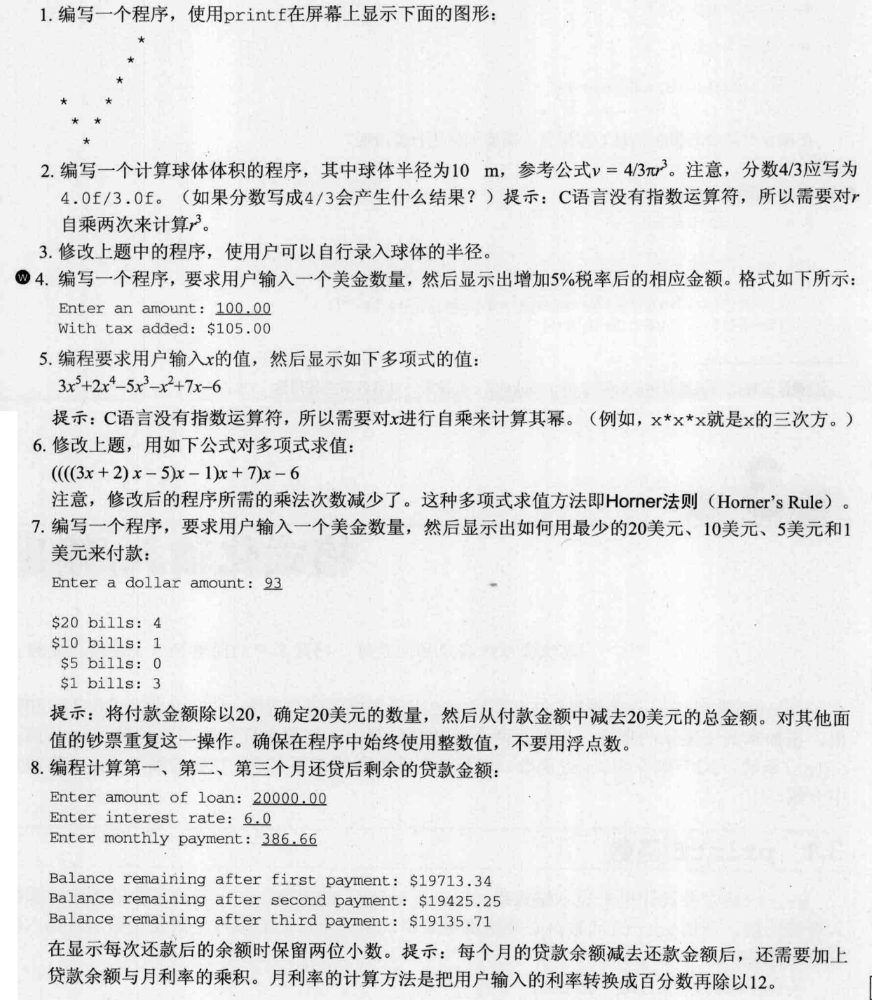
1.2 标准输入输出
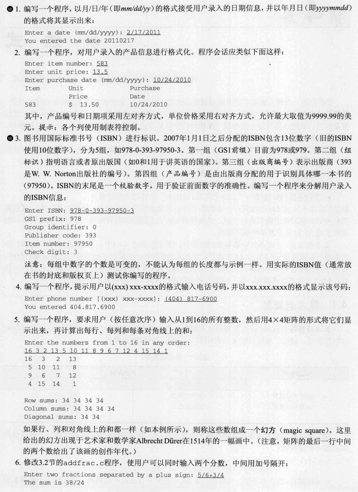
2 摘录於《C Prime Plus 6》
2.1 初识C语言
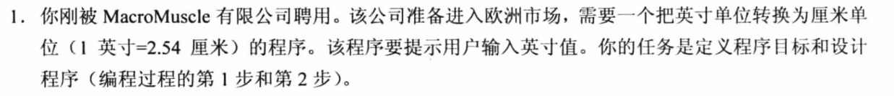
2.2 C语言基本概念
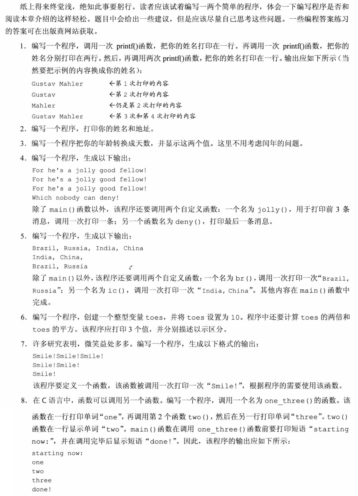
2.3 数据和C
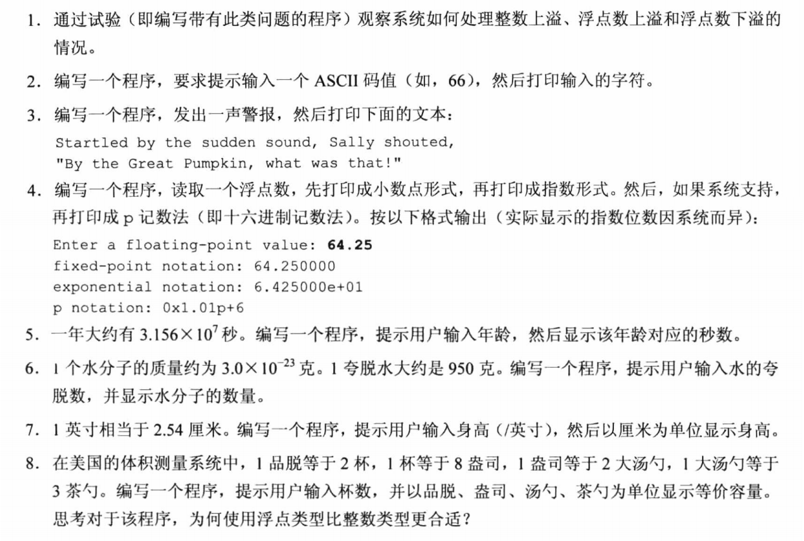
2.4 字符串的格式化输入输出
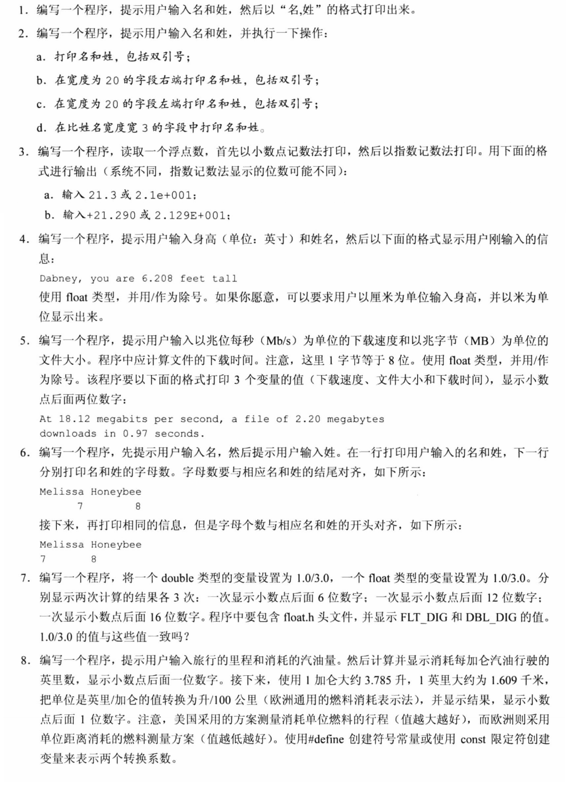
2.5 运算符、表达式、语句
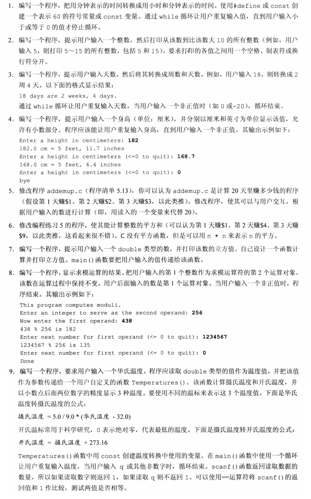
2.6 循环
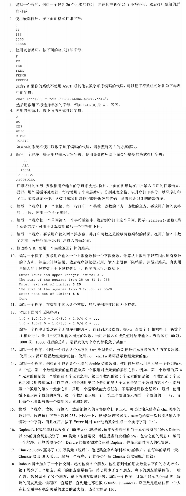
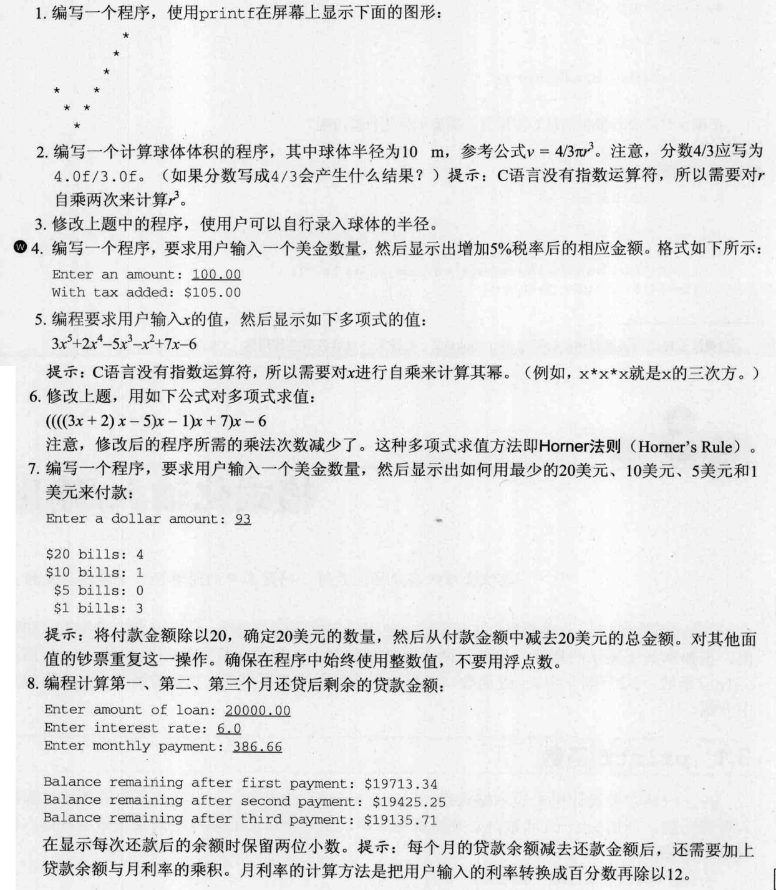
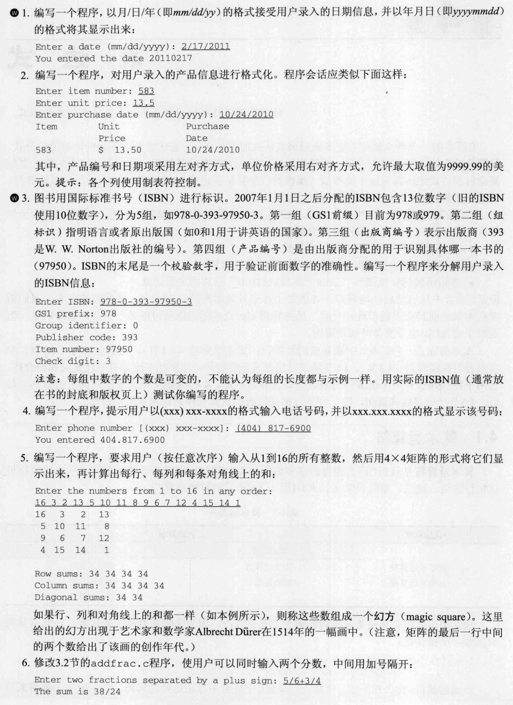
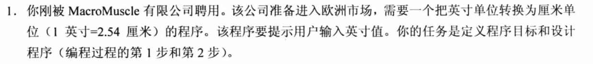
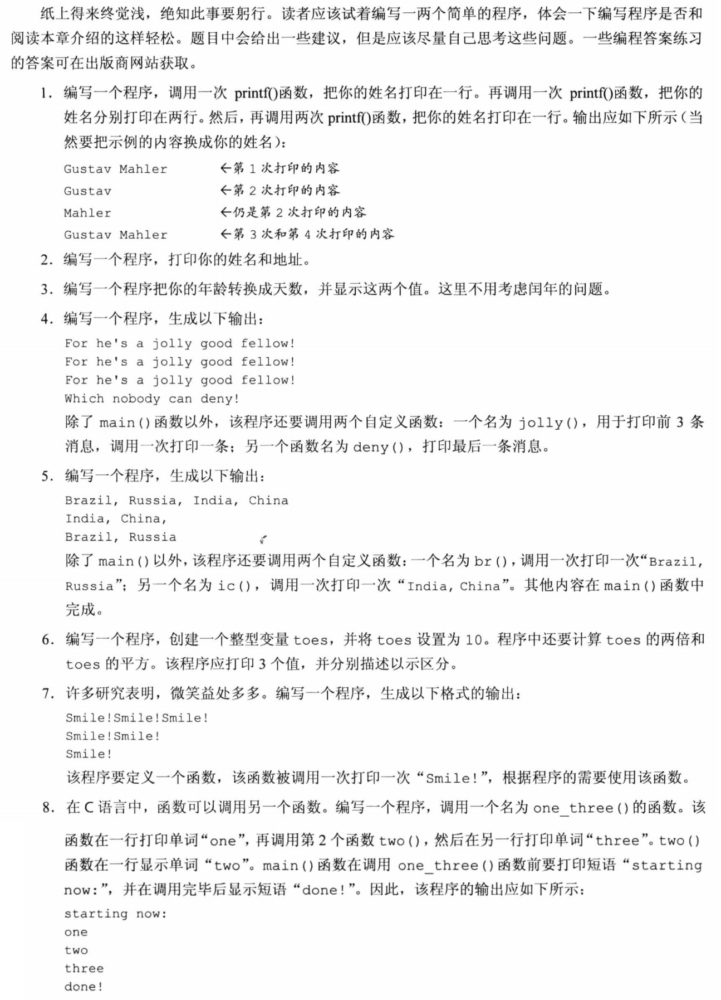
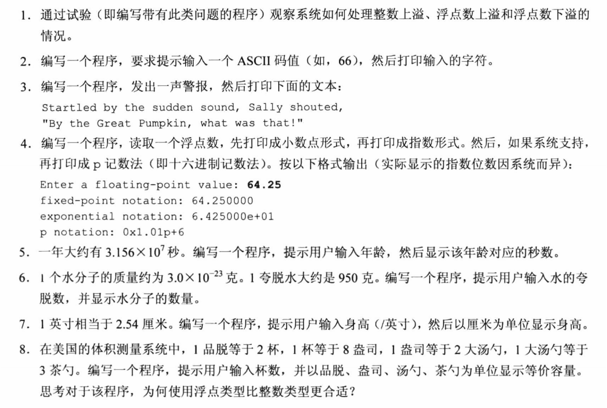
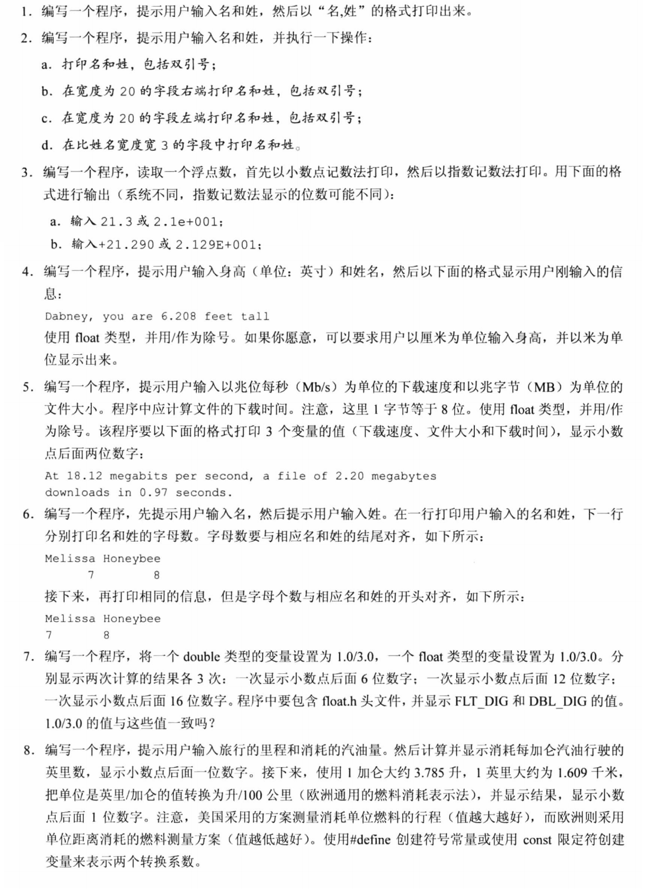
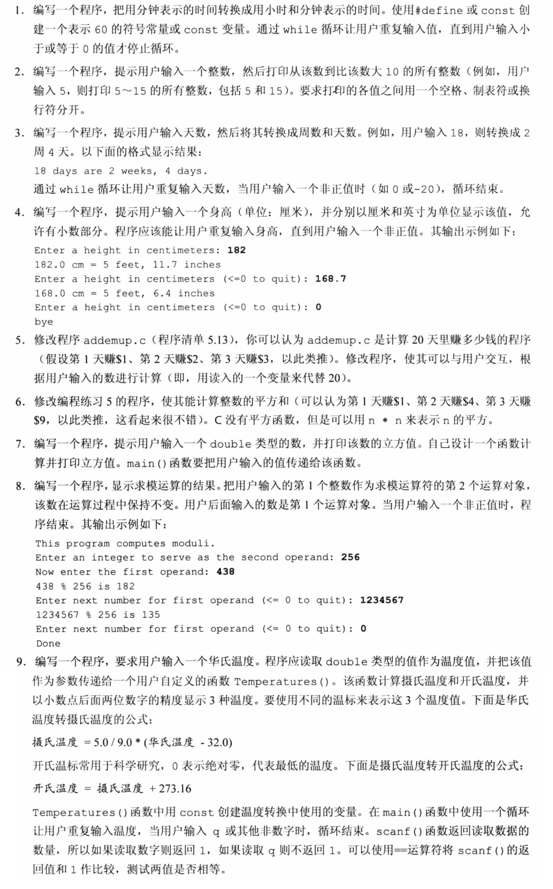
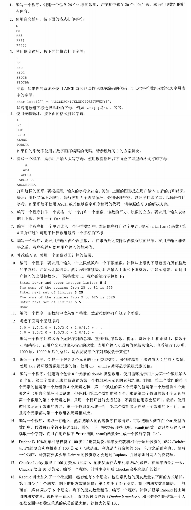
Created: 2020-09-03 Thu 09:11